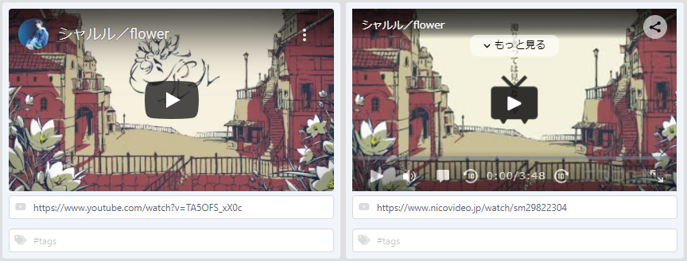

Jimacは、歌枠や歌ってみたの字幕オーバーレイ素材をお手軽に作れるWebツールです。
カラーやフォントの変更、縁取りなど多彩な装飾機能を備え、レパートリーの管理や検索なども行えます。

引用: グッバイ宣言 / FloweR
ウィンドウキャプチャでJimacのウィンドウを取り込みます。
フィルタ機能より字幕表示部分以外をクロップ（トリミング）し、字幕の背景色をクロマキー/カラーキーで透過します。

Jimac設定

OBSレイアウト

OBS:フィルタ-クロップ/Pad

OBS:フィルタ-カラーキー
引用: フォニイ / 可不
[] カウンター[表示行]を0に戻します。
[] (または左矢印キー) カウンターを1つ前に戻します。
[] (または右矢印キー) カウンターを1つ先に進めます。

字幕の背景色や文字色をカラーピッカーで変更できます。
RGB/HSL/HEXの数値での指定やスポイトでの色抽出も可能です。

字幕のフォントやフォントサイズを変更できます。
フォントサイズは楽曲ごとに保持されます。
（フォントの種類によって縁取りにトゲのようなノイズが出る場合があります）
【利用可能フォント】
Kiwi Maru /
Yusei Magic /
Hachi Maru Pop /
Kaisei Opti
有料版では以下の11フォントが追加されます
Dela Gothic One /
Klee One /
Kosugi Maru /
New Tegomin /
Potta One /
Shippori Mincho B1 /
Yomogi /
DotGothic16 /
Rampart One /
RocknRoll One /
Stick

字幕切り替え時のアニメーションを設定したり、テキストに縁取りを施すことができます。
Hint*
- フォントによっては縁取りにトゲついたノイズが入る場合があるため、気になる場合は縁取りをオフにしてください。
- アニメーション時の半透明部の色が綺麗に処理できない場合は、背景色を黒または白にすると違和感が少なくなります。

縁取りなし
縁取りあり

アニメーション: Stairs
引用: シャルル / バルーン
楽曲のタイトル（歌詞の一行目）と登録されたタグから楽曲検索[フィルタ]を行えます。
複数の単語で検索したい場合はスペースで区切ります。（AND検索になります）
単語の先頭に-[マイナス記号]をつけることで除外検索を行えます。

各楽曲の歌詞の先頭がタイトルとなり、一覧表示されます。
6曲目以降はスクロールで表示されます。（無料版は5曲まで）

[] 楽曲を追加します。9曲目以降は有料版へのアクティベートが必要です。
[] [] 選択中の楽曲を1つ上または下の(表示中の)楽曲と位置を入れ替えます。
[] 選択中の楽曲を削除します。
[] 楽曲一覧（フィルタ済みの内容）をクリップボードにコピーできます。

YouTubeまたはニコニコ動画のURLを張り付けると動画プレーヤーが表示され、動画を再生できます。
練習用のカラオケ動画や、二次利用可能な音源などを登録してお使いください。

引用: シャルル／flower
楽曲検索 [フィルタ]に使えるタグ/キーワードを設定します。先頭が#である必要はありません。（無料版は20文字まで）

Jimacのデータはお使いのブラウザのローカルストレージに保存され、サーバーには保存されません。
データのバックアップや、データのインポートは下記より行えます。（アクティベーションコードはバックアップされません）
データが壊れたり、通常通り利用できない場合にお試しください。（注：復元できません）
Illust: @merugamu_melgum